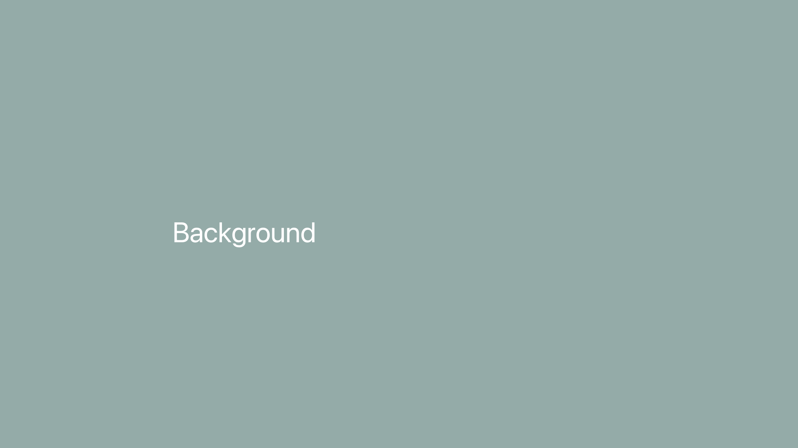
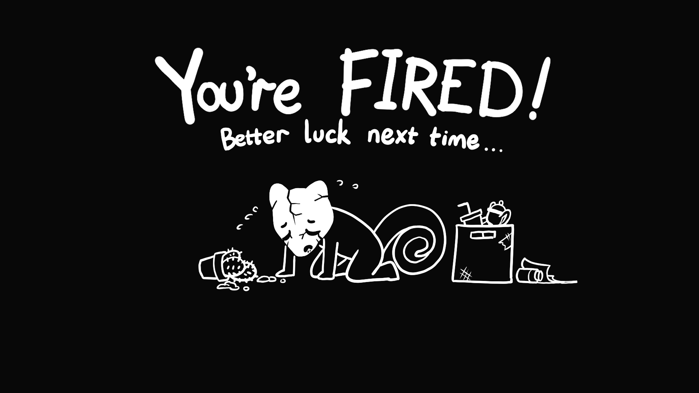
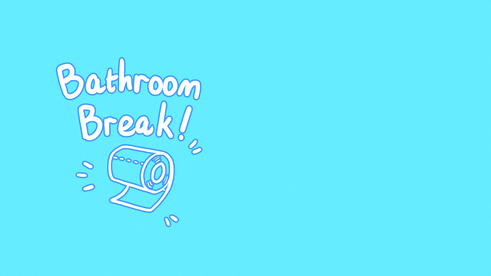

Keep Up The Good Work!
Play on itch.io!
This game was a collaborative effort between me and my Northeastern University cohort for the Global Game Jam during January of 2026, under the theme of 'Mask'.
Taken Roles: Concept Artist, UI Artist, Puzzle Designer
Concept art

Initial Concept

Second Concept: Scope down to necessary and simplified UI

Third Concept: Review on UI design

Fourth Concept: Alternate UI design

Title screen Rough Draft
In-Game Assets

UI Design Layers
The cohort wanted the player character to be a chameleon, to make the game appearing cute as a contrast to a modern phenomenon of masking emotions. Since the detailed art will be depicting an isometric view of a messy office with a busy office chameleon, I thought it would be most suitable to have the User Interface be mainly monochrome.
Agreeing on taking the perspective of a surveillance camera, I had the rim of a camera surround where the isometric view of the chameleon would be. The 'Rec' (recording) words on the top left was also meant to mimic a live camera. I reshaped the mask to be cartoonish chameleon-shaped to fit with the theme. The strings behind the mask dangles to the side, where its wearer would've been at, as if there's so much connection to the mask, the player chameleon will always have a connection to it. The brain on top of the mask is where the list of tasks will be coming in. The chameleon is remembering all the tasks it needs to do, and as the game goes on and tasks piles up, it'll literally overflow the brain.
The player is supposedly looking at the game through a surveillance camera screen on an old television, hence the edge of the screen with a glow towards the center to mimic the lights beaming from the surveillance display. The clock on the bottom right is meant to be a desk clock showing the player the time of the day, forever slowly looping between 9am and 5pm, forever making the player work until they cannot handle the overflow of tasks. However, we've soon changed it to a timer for how long the player survives the game.
The smiling mask people puts on can and will crack under pressure. with each 20% interval, the mask cracks more unless the player 'fixes' it with a 'bathroom break' or finish the tasks at hand before their individual timer runs out.


2-Frame Animated Death Screen

Bathroom Break cutscene image